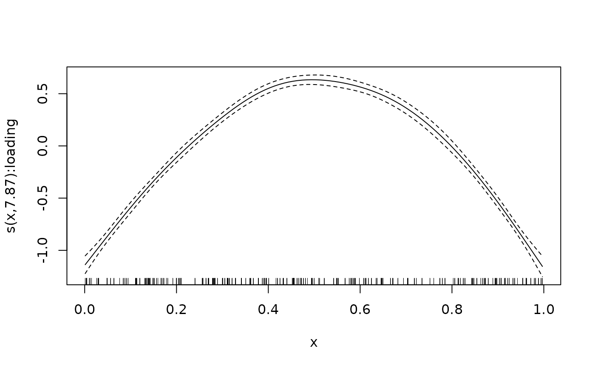

This function fits a generalized additive latent and mixed model
(GALAMMs), as described in
Sørensen et al. (2023)
.
The building blocks of these models are generalized additive mixed models
(GAMMs) (Wood 2017)
, of which
generalized linear mixed models
(Breslow and Clayton 1993; Harville 1977; Henderson 1975; Laird and Ware 1982)
are special cases. GALAMMs extend upon GAMMs by allowing factor structures,
as commonly used to model hypothesized latent traits underlying observed
measurements. In this sense, GALAMMs are an extension of generalized linear
latent and mixed models (GLLAMMs)
(Skrondal and Rabe-Hesketh 2004; Rabe-Hesketh et al. 2004)
which allows semiparametric estimation. The implemented algorithm used to
compute model estimates is described in
Sørensen et al. (2023)
,
and is an extension of the algorithm used for fitting generalized linear
mixed models by the lme4 package
(Bates et al. 2015)
. The syntax used to
define factor structures is based on that used by the PLmixed
package, which is detailed in
Rockwood and Jeon (2019)
.
Usage
galamm(
formula,
weights = NULL,
data,
family = gaussian,
family_mapping = rep(1, nrow(data)),
load.var = NULL,
lambda = NULL,
factor = NULL,
factor_interactions = NULL,
na.action = getOption("na.action"),
start = NULL,
control = galamm_control()
)Arguments
- formula
A formula specifying the model. Smooth terms are defined in the style of the
mgcvandgamm4packages, see (Wood 2017) for an introduction. Random effects are specified usinglme4syntax, which is described in detail in (Bates et al. 2015) . Factor loadings will also be part of the model formula, and is based on the syntax of thePLmixedpackage (Rockwood and Jeon 2019) .- weights
An optional formula object specifying an expression for the residual variance. Defaults to
NULL, corresponding to homoscedastic errors. The formula is defined inlme4style; see vignettes and examples for details.- data
A data.frame containing all the variables specified by the model formula, with the exception of factor loadings.
- family
A a list or character vector containing one or more model families. For each element in
familythere should be a corresponding element infamily_mappingspecifying which elements of the response are conditionally distributed according to the given family. Currently family can be one ofgaussian,binomial, andpoisson, and only canonical link functions are supported. The family arguments can either be provided as character values, e.g.,c("gaussian", "poisson")orlist("gaussian", "poisson"), as function names, e.g.,c(gaussian, poisson)orlist(gaussian, poisson), or as function calls, e.g.,list(gaussian(), poisson()). In the latter case, they must be provided in a list, and bot as a vector. Mixing the different ways of describing the family also works, e.g.,list("gaussian", poisson()), but in this case they must be provided in a list. When provided as character values, the argument is case sensitive.- family_mapping
Optional vector mapping from the elements of
familyto rows ofdata. Defaults torep(1, nrow(data)), which means that all observations are distributed according to the first element offamily. The length offamily_mappingmust be identical to the number of observations,nrow(data).- load.var
Optional character specifying the name of the variable in
dataidentifying what the factors load onto. Default toNULL, which means that there are no loading variables. Argument is case sensitive.- lambda
Optional factor loading matrix. Numerical values indicate that the given value is fixed, while
NAmeans that the entry is a parameter to be estimated. Numerical values can only take the values 0 orThe number of columns of
lambdamust be identical to the number of elements infactor. Defaults toNULL, which means that there is no factor loading matrix. Iflambdais provided as a vector, it will be converted to amatrixwith a single column.
- factor
Optional character vector whose \(j\)th entry corresponds to the \(j\)th column of the corresponding matrix in
lambda. The number of elements infactormust be equal to the number of columns inlambda. Defaults toNULL, which means that there are no factor loadings. Argument is case sensitive.- factor_interactions
Optional list of length equal to the number of columns in
lambda. Each list element should be aformulaobject containing the write-hand side of a regression model, of the form~ x + z. Defaults toNULL, which means that no factor interactions are used.- na.action
Character of length one specifying a function which indicates what should happen when the data contains
NAs. The defaults is set to thena.actionsetting ofoptions, which can be seen withoptions("na.action"). The other alternatives are"na.fail"or"na.exclude", which means that the function fails if there asNAs indata.- start
Optional named list of starting values for parameters. Possible names of list elements are
"theta","beta","lambda", and"weights", all of should be numerical vectors with starting values. Default toNULL, which means that some relatively sensible defaults are used. Names of parameters must be given in all lower case.- control
Optional control object for the optimization procedure of class
galamm_controlresulting from callinggalamm_control. Defaults toNULL, which means that the defaults ofgalamm_controlare used.
Value
A model object of class galamm, containing the following
elements:
callthe matched call used when fitting the model.random_effectsa list containing the following two elements:brandom effects in original parametrization.urandom effects standardized to have identity covariance matrix.
modela list with various elements related to the model setup and fit:deviancedeviance of final model.deviance_residualsdeviance residuals of the final model.dfdegrees of freedom of model.familya list of one or more family objects, as specified in thefamilyarguments togalamm.factor_interactionsList of formulas specifying interactions between latent and observed variables, as provided to the argumentfactor_interactionstogalamm. If not provided, it isNULL.fita numeric vector with fitted values.fit_populationa numeric vector with fitted values excluding random effects.hessianHessian matrix of final model, i.e., the second derivative of the log-likelihood with respect to all model parameters.lmodLinear model object returned bylme4::lFormula, which is used internally for setting up the models.loglikLog-likelihood of final model.nNumber of observations.pearson_residualPearson residuals of final model.reduced_hessianLogical specifying whether the full Hessian matrix was computed, or a Hessian matrix with derivatives only with respect to beta and lambda.responseA numeric vector containing the response values used when fitting the model.weights_objectObject with weights used in model fitting. IsNULLwhen no weights were used.
parametersA list object with model parameters and related information:beta_indsInteger vector specifying the indices of fixed regression coefficients among the estimated model parameters.dispersion_parameterOne or more dispersion parameters of the final model.lambda_dummyDummy matrix of factor loadings, which shows the structure of the loading matrix that was supplied in thelambdaarguments.lambda_indsInteger vector specifying the indices of factor loadings among the estimated model parameters.lambda_interaction_indsInteger vector specifying the indices of regression coefficients for interactions between latent and observed variables.parameter_estimatesNumeric vector of final parameter estimates.parameter_namesNames of all parameters estimates.theta_indsInteger vector specifying the indices of variance components among the estimated model parameters. Technically these are the entries of the Cholesky decomposition of the covariance matrix.weights_indsInteger vector specifying the indices of estimated weights (used in heteroscedastic Gaussian models) among the estimated model parameters.
gamList containing information about smooth terms in the model. If no smooth terms are contained in the model, then it is a list of length zero.
References
Bates DM, Mächler M, Bolker B, Walker S (2015).
“Fitting Linear Mixed-Effects Models Using Lme4.”
Journal of Statistical Software, 67(1), 1–48.
ISSN 1548-7660, doi:10.18637/jss.v067.i01
.
Breslow NE, Clayton DG (1993).
“Approximate Inference in Generalized Linear Mixed Models.”
Journal of the American Statistical Association, 88(421), 9–25.
ISSN 0162-1459, doi:10.2307/2290687
.
Harville DA (1977).
“Maximum Likelihood Approaches to Variance Component Estimation and to Related Problems.”
Journal of the American Statistical Association, 72(358), 320–338.
ISSN 0162-1459, doi:10.2307/2286796
.
Henderson CR (1975).
“Best Linear Unbiased Estimation and Prediction under a Selection Model.”
Biometrics, 31(2), 423–447.
ISSN 0006-341X, doi:10.2307/2529430
.
Laird NM, Ware JH (1982).
“Random-Effects Models for Longitudinal Data.”
Biometrics, 38(4), 963–974.
ISSN 0006-341X, doi:10.2307/2529876
.
Rabe-Hesketh S, Skrondal A, Pickles A (2004).
“Generalized Multilevel Structural Equation Modeling.”
Psychometrika, 69(2), 167–190.
ISSN 1860-0980, doi:10.1007/BF02295939
.
Rockwood NJ, Jeon M (2019).
“Estimating Complex Measurement and Growth Models Using the R Package PLmixed.”
Multivariate Behavioral Research, 54(2), 288–306.
ISSN 0027-3171, doi:10.1080/00273171.2018.1516541
.
Skrondal A, Rabe-Hesketh S (2004).
Generalized Latent Variable Modeling, Interdisciplinary Statistics Series.
Chapman and Hall/CRC, Boca Raton, Florida.
Sørensen Ø, Fjell AM, Walhovd KB (2023).
“Longitudinal Modeling of Age-Dependent Latent Traits with Generalized Additive Latent and Mixed Models.”
Psychometrika, 88(2), 456–486.
ISSN 1860-0980, doi:10.1007/s11336-023-09910-z
.
Wood SN (2017).
Generalized Additive Models: An Introduction with R, 2 edition.
Chapman and Hall/CRC.
Examples
# Mixed response model ------------------------------------------------------
# The mresp dataset contains a mix of binomial and Gaussian responses.
# We need to estimate a factor loading which scales the two response types.
loading_matrix <- matrix(c(1, NA), ncol = 1)
# Define mapping to families.
families <- c(gaussian, binomial)
family_mapping <- ifelse(mresp$itemgroup == "a", 1, 2)
# Fit the model
mod <- galamm(
formula = y ~ x + (0 + level | id),
data = mresp,
family = families,
family_mapping = family_mapping,
factor = "level",
load.var = "itemgroup",
lambda = loading_matrix
)
# Summary information
summary(mod)
#> GALAMM fit by maximum marginal likelihood.
#> Formula: y ~ x + (0 + level | id)
#> Data: mresp
#>
#> AIC BIC logLik deviance df.resid
#> 9248.7 9280.2 -4619.3 3633.1 3995
#>
#> Lambda:
#> level SE
#> lambda1 1.000 .
#> lambda2 1.095 0.09982
#>
#> Random effects:
#> Groups Name Variance Std.Dev.
#> id level 1.05 1.025
#> Number of obs: 4000, groups: id, 1000
#>
#> Fixed effects:
#> Estimate Std. Error z value Pr(>|z|)
#> (Intercept) 0.041 0.05803 0.7065 4.799e-01
#> x 0.971 0.08594 11.2994 1.321e-29
#>
#>
# Heteroscedastic model -----------------------------------------------------
# Residuals allowed to differ according to the item variable
# We also set the initial value of the random intercept standard deviation
# to 1
mod <- galamm(
formula = y ~ x + (1 | id), weights = ~ (1 | item),
data = hsced, start = list(theta = 1)
)
summary(mod)
#> GALAMM fit by maximum marginal likelihood.
#> Formula: y ~ x + (1 | id)
#> Data: hsced
#> Weights: ~(1 | item)
#>
#> AIC BIC logLik deviance df.resid
#> 4126.3 4151.7 -2058.1 4116.3 1195
#>
#> Scaled residuals:
#> Min 1Q Median 3Q Max
#> -5.6545 -0.7105 0.0286 0.6827 4.3261
#>
#> Random effects:
#> Groups Name Variance Std.Dev.
#> id (Intercept) 0.9880 0.9940
#> Residual 0.9597 0.9796
#> Number of obs: 1200, groups: id, 200
#>
#> Variance function:
#> 1 2
#> 1.000 1.995
#>
#> Fixed effects:
#> Estimate Std. Error t value Pr(>|t|)
#> (Intercept) 0.1289 0.0992 1.299 1.938e-01
#> x 0.7062 0.1213 5.822 5.819e-09
#>
#>
# Generalized additive mixed model with factor structures -------------------
# The cognition dataset contains simulated measurements of three latent
# time-dependent processes, corresponding to individuals' abilities in
# cognitive domains. We focus here on the first domain, and take a single
# random timepoint per person:
dat <- subset(cognition, domain == 1)
dat <- split(dat, f = dat$id)
dat <- lapply(dat, function(x) x[x$timepoint %in% sample(x$timepoint, 1), ])
dat <- do.call(rbind, dat)
dat$item <- factor(dat$item)
# At each timepoint there are three items measuring ability in the cognitive
# domain. We fix the factor loading for the first measurement to one, and
# estimate the remaining two. This is specified in the loading matrix.
loading_matrix <- matrix(c(1, NA, NA), ncol = 1)
# We can now estimate the model.
mod <- galamm(
formula = y ~ 0 + item + sl(x, factor = "loading") +
(0 + loading | id),
data = dat,
load.var = "item",
lambda = loading_matrix,
factor = "loading"
)
# We can plot the estimated smooth term
plot_smooth(mod, shade = TRUE)

# Interaction between observed and latent covariates ------------------------
# Define the loading matrix
lambda <- matrix(c(1, NA, NA), ncol = 1)
# Define the regression functions, one for each row in the loading matrix
factor_interactions <- list(~1, ~1, ~x)
# Fit the model
mod <- galamm(
formula = y ~ type + x:response + (0 + loading | id),
data = latent_covariates,
load.var = "type",
lambda = lambda,
factor = "loading",
factor_interactions = factor_interactions
)
# The summary output now include an interaction between the latent variable
# and x, for predicting the third element in "type"
summary(mod)
#> GALAMM fit by maximum marginal likelihood.
#> Formula: y ~ type + x:response + (0 + loading | id)
#> Data: latent_covariates
#>
#> AIC BIC logLik deviance df.resid
#> 138.3 177.9 -60.2 120.3 591
#>
#> Scaled residuals:
#> Min 1Q Median 3Q Max
#> -2.2033 -0.5251 -0.0273 0.5146 3.5029
#>
#> Lambda:
#> loading SE
#> lambda1 1.0000 .
#> lambda2 1.3034 0.01268
#> lambda3 -0.3183 0.01604
#> lambda4_x 0.2331 0.02873
#>
#> Random effects:
#> Groups Name Variance Std.Dev.
#> id loading 0.98175 0.9908
#> Residual 0.01164 0.1079
#> Number of obs: 600, groups: id, 200
#>
#> Fixed effects:
#> Estimate Std. Error t value Pr(>|t|)
#> (Intercept) -0.010589 0.07048 -0.15024 8.806e-01
#> typemeasurement2 -0.002173 0.02384 -0.09116 9.274e-01
#> typeresponse 0.034005 0.09417 0.36109 7.180e-01
#> x:response 0.462507 0.03300 14.01556 1.252e-44
#>
#>